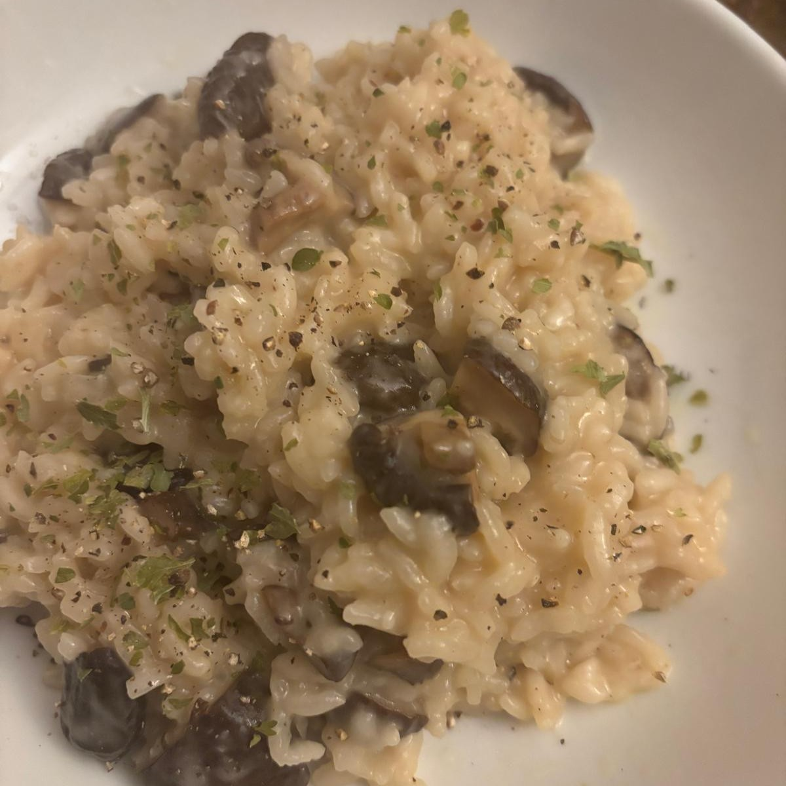

Mushroom Risotto

Tasty mushrooms
Make your risotto extra soft and creamy
Feel the mushrooms in the dish and wonder why you never tasted them so much before...
Ingredients
- 40g of dried mushrooms
- 3 tablespoon of butter
- 200g of risotto
- Persil
- 400ml Chicken broth
- 10ml of white wine
- 100g of Parmiggiano rrrrrregiano
Steps
- Soak your mushroom the appropiate amount of time and cut them in little slices. Keep the remaining water !
- Make them fry on medium heat for 5/6min and set aside
- prepare your broth and soak the risotto in it, mix it for 1min
- Get the risotto out of the broth and but it in the hot pan with a tablespoon of butter
- After 3/4min on medium heat, put in the white wine and wait for it to evaporate
- Put 3/4 of the broth in the pan, reduce to low-medium heat and add a bit of the remaining water from the mushrooms. Mix and Wait for 15min
- Put in the remaining butter and add some more broth if there is not a lot remaining, wait for 5/6min more
- Add the parmesan and wait for a few minutes more depending ono the texture of the risotto, add more broth if it's not vreamy enough
- Put it in a plate and add peril and pepper on top, Done !
Home